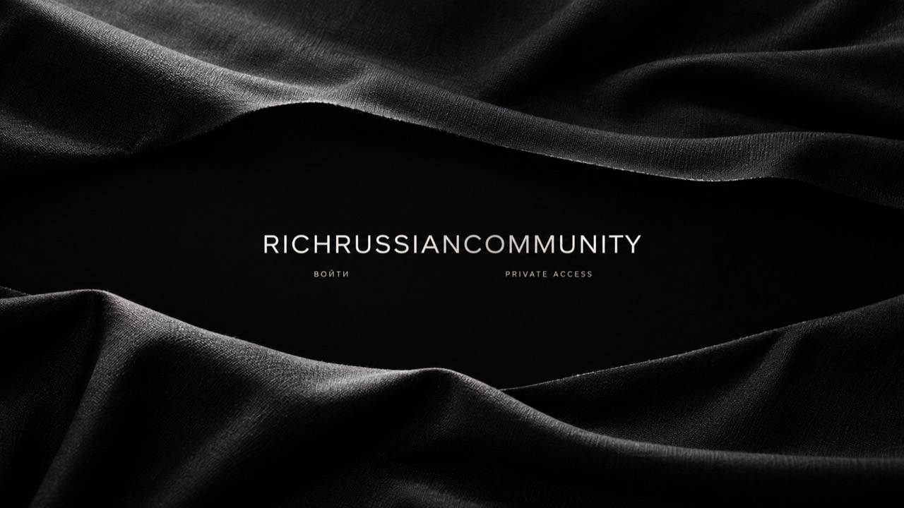
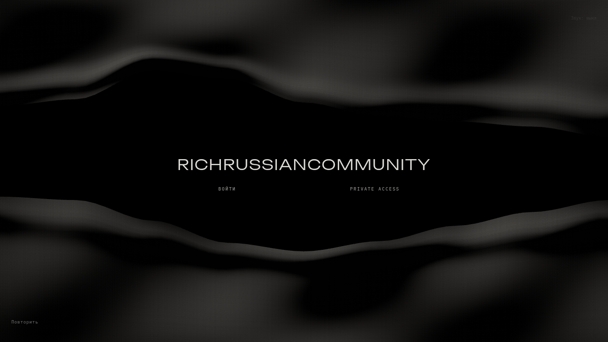
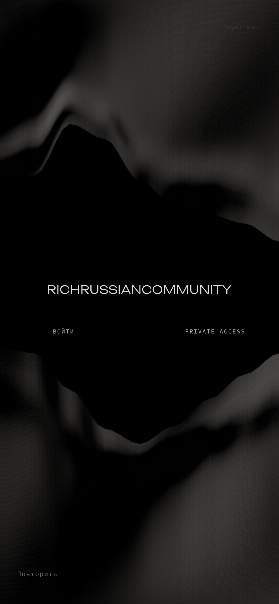

Записи сделаны в Chromium 154 / SwiftShader на облачном компьютере. Телефон эмулирован: это не проверка FPS реального устройства. Ткань и ножницы остаются авторскими CG-моделями; фотографическая точность референса не достигнута.


Нативная запись браузера, включая подготовку сцены. Без интерполяции движения или ускорения. Программный GPU этой машины заметно медленнее целевого профиля.

Кольцо и CAPTURED/RELEASED — только подсказки тестовой записи. Они показывают активный указатель и выбранное полотнище, отсутствуют в опубликованном коде интерфейса. На видео нет подмены ткани фотографией при захвате.
Полный отчёт, ограничения и список файлов · Холодные замеры · Приёмка взаимодействий · Размеры ресурсов
На своей машине: npm ci, npm run dev, открыть localhost:3000 в новой приватной сессии. Production preview в рабочей среде: порт 3000. Опубликованный сайт не обновлён.